Práctica 4: Convolución y Correlación de señales en tiempo continuo
Contents
Simulación numérica de convolución
Existen diferentes formas de implementar simulaciones numéricas de convoluciones. De acuerdo a la definición matemática de convolución necesitamos resolver una integral de una multiplicación de señales, entonces implementar una simulación de convolución se subdivide en entender que significa integrar numéricamente y posteriormente elegir un algoritmo que resuelva el problema de integración.
La siguiente lista de reproducción explica sobre la simulación numérica de integrales, no se explican todos los algoritmos exitentes (hay bastantes) pero sirve para tener una idea de lo que se busca en general cuando se realizan simulaciones numericas
Para la implementación númerica es importante tener en cuenta la duración de cada señal, recuerde que es imposible hacer simulaciones númericas que involucren cantidades infinitas. Si una señal tiene duración 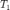 y otra señal 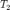 la convolución tendrá duración 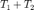; donde la duración se refiere al intervalo para el cual la señal no es totalmente cero.
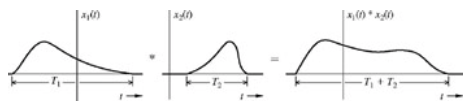
Cabe señalar que si las señales involucradas tienen duración infinita podría elegirse y lo suficientemente grande para tener una idea de lo que sucede con el resultado de su convolución
Por ejemplo si queremos realizar la convolución de las siguientes señales
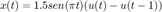
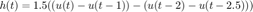
la señal resultante tendrá longitud de 3.5.
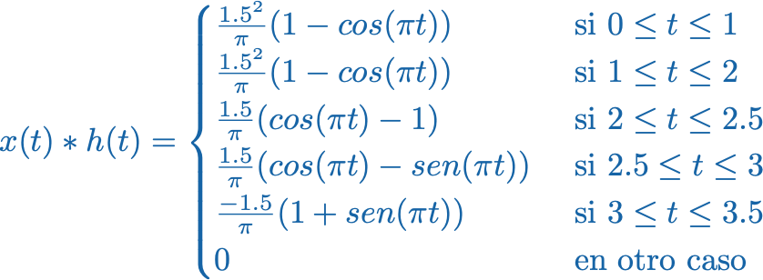
Ahora se pueden implementar la grafica en MATLAB,
figure subplot(1,3,1) syms t x=piecewise(t<0,0,0<t<1,1.5*sin(pi*t),t>1,0); fplot(x,[-0.25,1.25],'r') grid on title('x(t)') axis([-1 3.6 -2 2]); subplot(1,3,2) h=piecewise(t<0,0,0<t<1,1.5,1<t<2,0,2<t<2.5,-1.5,t>2.5,0); fplot(h,[-0.25,2.75],'r') grid on title('h(t)') axis([-1 3.6 -2 2]); t1=0:0.01:1; t2=1:0.01:2; t3=2:0.01:2.5; t4=2.5:0.01:3; t5=3:0.01:3.5; subplot(1,3,3) plot(t1,(1.5^2/pi)*(1-cos(pi*t1))) hold on plot(t2,(1.5^2/pi)*(1-cos(pi*t2))) plot(t3,(1.5/pi)*(cos(pi*t3)-1)) plot(t4,(1.5/pi)*(cos(pi*t4)-sin(pi*t4))) plot(t5, (-1.5/pi)*(1+sin(pi*t5))) grid on title('x(t)*h(t)') axis([-1 3.6 -2 2]);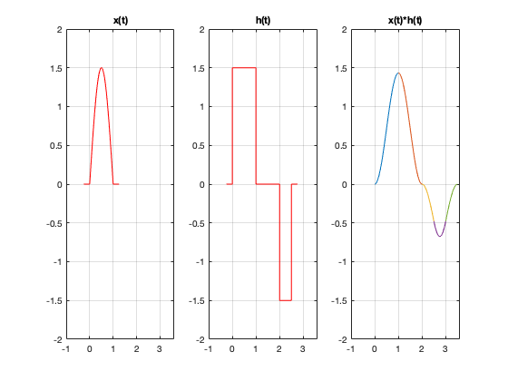
El siguiente código es una modificación del código de Lathi (Código del capítulo 2, M2.4 pág 161), ejemplo de convoluciones continuas
function convconm(x,h) figure (1) % Se crea una figura para hacer las gráficas dtau = 0.005; % Base de los rectangulos para realizar la integral tau = -1:dtau:4; % Intervalo de visualización del resultado ti = 0; % Indice para el vector de resultados tvec = -.25:.1:3.75; % traslaciones de t, cuantas integrales se calulan y = NaN*zeros(1, length (tvec)); % Resultados de acuerdo a cuantos t for t = tvec, % Cantidad de traslaciones ti = ti+1; % Indice para guardar el resultado (indice del tiempo) xh = x(t-tau).*h(tau); % resultado de la multiplicación lxh = length(xh); % longitud del resultado y(ti) = sum(xh.*dtau); % Base por altura, aproximación de la integral subplot (2,1,1), % gráfica de 2 x 1 (primera) plot(tau, h(tau), 'r-', tau, x(t-tau), 'g--', t, 0, 'ob'); %graficas axis ([tau(1) tau(end) -2.0 2.5]); % límites de los ejes patch([tau(1:end-1); tau(1:end-1); tau(2:end); tau(2:end)],... [zeros(1,lxh-1);xh(1:end-1);xh(2:end);zeros(1,lxh-1)],... [.8 .8 .8], 'edgecolor', 'none'); xlabel('\tau'); % Texto del eje X legend('h(\tau)', 'x(t-\tau)','t','h(\tau)x(t-\tau)')% Caja de Texto subplot (2, 1, 2) % gráfica de 2 x 1 (segunda) plot (tvec, y, 'k', tvec (ti), y(ti), 'ok'); xlabel ('t'); ylabel ('y(t) = \int h(\tau)x(t-\tau) d\tau'); axis ([tau(1) tau(end) -1.0 2.0]); % límites del eje grid; % malla drawnow; % efecto de movimiento continuo end end
Si ejecutamos las siguientes instrucciones en el Command Window y el directorio de trabajo es el mismo donde se encuentra la función convconm tendrémos el siguiente resultado
x = @(t) 1.5*sin(pi*t).*(t>=0 & t<1); h = @(t) 1.5*((t>=0&t<1.0) - (t>=2&t<2.5)); convconm(x,h)

El cual puede compararse con la gráfica del resultado análitico y observar que la solución númerica es una buena aproximación de la exacta.
Correlación númerica
Una manera de abordar este problema es recordando una equivalencia de la correlación
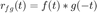
Entonces por ejemplo si se quisiera realizar la correlación de las señales
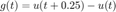
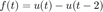
El código de convolución podría ocuparse de la siguiente manera
g = @(t) (t>=0 & t<0.25); f = @(t) (t>=0&t<2); convconm(g,f)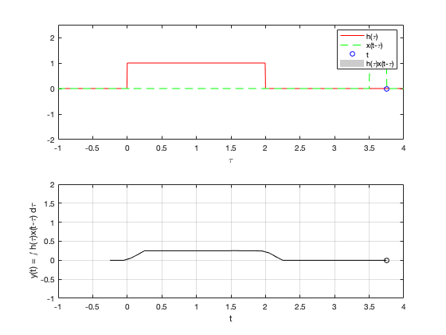
Convolución de señales en tiempo discreto
La convolución de señales en tiempo discreto da como resultado otra señal en tiempo discreto, la operación se define como
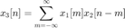
Mediante calculos computacionales directos no podemos obtener el resultado para señales de longitud infinita, por lo que acotaremos nuestra descripción a señales causales de longitud finita, para ello daremos algunas anotaciones para considerar en nuestro algoritmo
- Si la señal tiene longitu y la señal tiene longitud entonces la señal 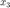 tiene longitud 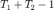
- La instrucción conv de MATLAB ayuda a calcular las convoluciones, hay que tener cuidado con las especificaciones, consultar Lathi capítulo 3 sección M3.4
function convdisc(x1,x2) Tam1 = size(x1(1,:)); Tam2 = size(x2(1,:)); T1 = Tam1(2); T2 = Tam2(2); T3 = T1+T2-1; vec1 = zeros(1,T1+2*T2-2); vec2 = zeros(1,T1+2*T2-2); Tec2 = -(T2-1):(T1+T2-2); size(vec2); size(Tec2); x3=zeros(2,T3); x3(1,:)=0:T3-1; x3(1,:)=x3(1,:)+x1(1,1)+x2(1,1); vec1(1,T2:T2+T1-1)=x1(2,:); figure (1) hFig = figure(1); set(hFig, 'Position', [0 0 1000 1000]) filename = 'testAnimated.gif'; ttt=1; for m=0:T1+T2-2 vec2(1,1+m:T2+m)=fliplr(x2(2,:)); x3(2,m+1)=sum(vec1.*vec2); subplot(4,1,4) stem(x3(1,:),x3(2,:),'r','LineWidth',3) axis([Tec2(1),T1+2*T2-2, min(x3(2,:))-1 max(x3(2,:))+1]) ylabel('x_3[n]','FontWeight','bold','FontSize',16); xlabel('n','FontWeight','bold','FontSize',16); grid on subplot(4,1,1) stem(x2(1,:),x2(2,:),'k','LineWidth',3) ylabel('x_2[m]','FontWeight','bold','FontSize',16); xlabel('m','FontWeight','bold','FontSize',16); title('CONVOLUCIóN','FontWeight','bold','FontSize',16); grid on axis([Tec2(1),T1+2*T2-2, min(x2(2,:))-1 max(x2(2,:))+1]) subplot(4,1,2) stem(x1(1,:),x1(2,:),'b','LineWidth',3) ylabel('x_1[m]','FontWeight','bold','FontSize',16); xlabel('m','FontWeight','bold','FontSize',16); grid on axis([Tec2(1),T1+2*T2-2, min(x1(2,:))-1 max(x1(2,:))+1]) subplot(4,1,3) stem(Tec2,vec2(1,:),'g','LineWidth',3) axis([Tec2(1),T1+2*T2-2,min(vec2)-1, max(vec2)+1 ]) ylabel('x_2[n-m]','FontWeight','bold','FontSize',16); xlabel('m','FontWeight','bold','FontSize',16); grid on drawnow; pause(0.4) vec2 = zeros(1,T1+2*T2-2); frame = getframe(hFig); im = frame2im(frame); [imind,cm] = rgb2ind(im,256); % Write to the GIF File if ttt == 1 imwrite(imind,cm,filename,'gif', 'Loopcount',inf); else imwrite(imind,cm,filename,'gif','WriteMode','append'); end ttt=ttt+1; end end
Si ejecutamos las siguientes instrucciones en el Command Window y el directorio de trabajo es el mismo donde se encuentra la función convdisc tendrémos el siguiente resultado
n=0:20; a=[0 1 2 3 4 5 0 0 0 0 0 0 0 0 0 5 4 3 2 1 0]; b=[0 0 0 0 0 5 0 0 0 0 0 0 0 0 0 5 0 0 0 0 0]; convdisc([n;a],[n;b])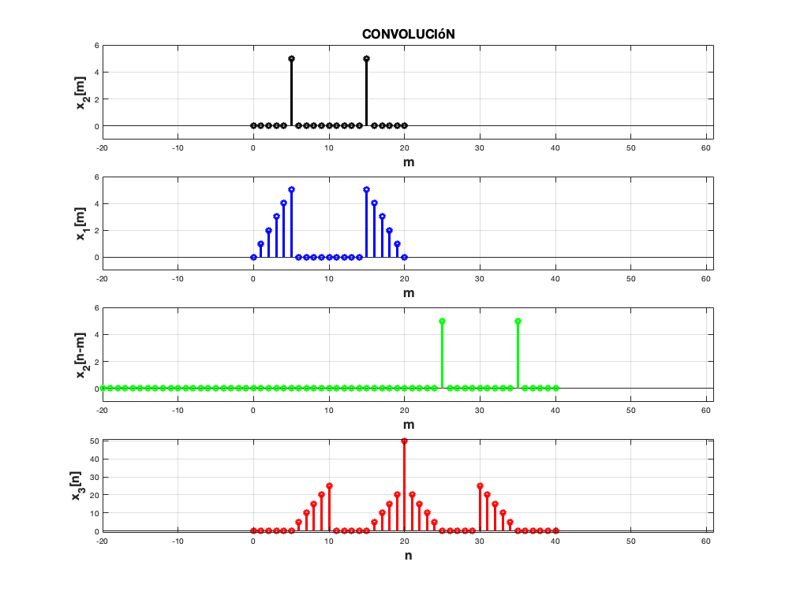
Correlación de señales en tiempo discreto
Si se quisiera hacer la correlación de las señales 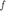 y 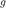 recordemos que 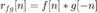, entonces si
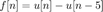
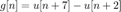
Se podría utilizar el código de convolución para resolver este problema
nf=0:4; f=@(n) n>=0 & n<=4; ng=3:7; g=@(n) n>=3 & n<=7; convdisc( [nf;f(nf)], [ng;g(ng)] )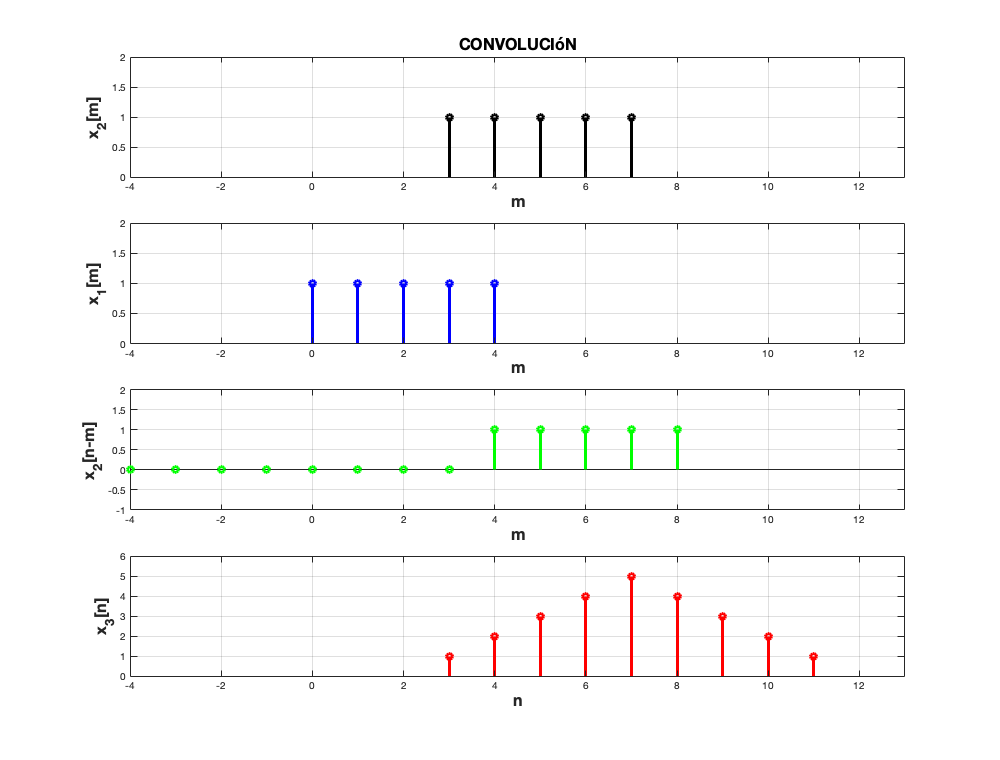
Entregables
Se revisa una publicación (html) de la práctica. En este caso inicie indicando el nombre de la práctica y sus datos personales, equipos de dos o tres personas (Portada). El índice del contenido lo genera Publish (Índice). Los objetivos son los sigueintes:
- Conocer métodos básicos de integración numérica
- Manipulación de instrucciones en MATLAB
- Simular convoluciones y correlaciones de señales continuas
- Simular convoluciones y correlaciones de señales discretas
Como introducción elabore un reporte de los métodos descritos en la lista de reproducción que incluya el desarrollo de los ejemplos expuestos.
Para el desarrollo se tienen que resolver cada uno de los siguientes problemas comenzando una nueva sección (para la publicación) en cada uno de ellos.
Para cada problema se tendrán que hacer las modíficaciones necesarias al código de ejemplo, convendría entonces pensar en realizar una modificación general de tal manera que el programa funcione para cualesquiera dos funciones, pero esto es opcional.
- Para el PR04 reporte la grafica de la simulación númerica de la convolución y compare con el resultado análitico que obtuvo para el problema 1, esto es, su práctica tendrá que incluir una llamada a la funciónn convconm y posteriormente se tendrá que mostrar (mediante el Publish) la gráfica tanto de las señales involucradas como el resultado de la convolución, y en esta última gráficara su resultado analitico, se tendrá que incluir el resultado analitico.
- Para el PR05 reporte la grafica de la simulación númerica de la correalción y compare con el resultado análitico que obtuvo para el problema e), esto es, su práctica tendrá que incluir una llamada a la funciónn convconm y posteriormente se tendrá que mostrar (mediante el Publish) la gráfica tanto de las señales involucradas como el resultado de su correlación, y en esta última graficara su resultado analitico, se tendrá que incluir el resultado analitico.
- Realice la simuación de la convolución de las señales (c) con (d) del problema 3.1.1
- Realice la simuación de la correlación de las señales (c) con (d) del problema 3.1.1
- Realice la la convolución de las señales (c) con (d) del problema 3.1.1 utilizando el comando conv de MATLAB, muestre el código utilizado y gráfique el resultado, sugerencia: Utilice las propiedades de traslación de la convolución.
El código de esta publicación lo puedes encontrar en el siguiente enlace